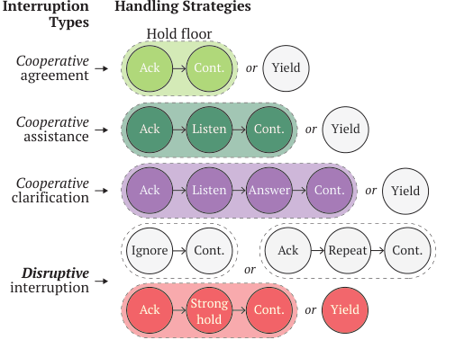
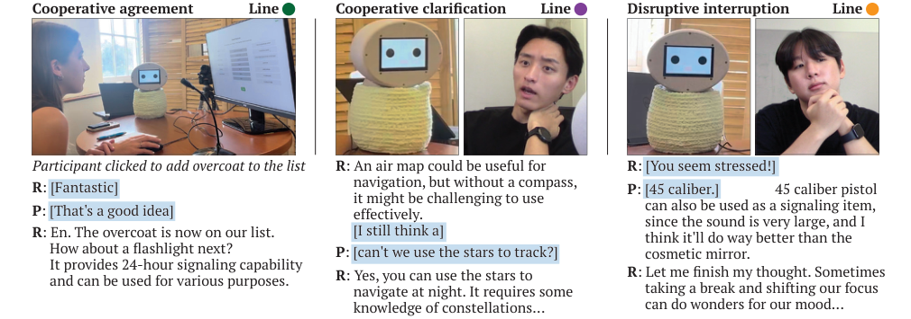
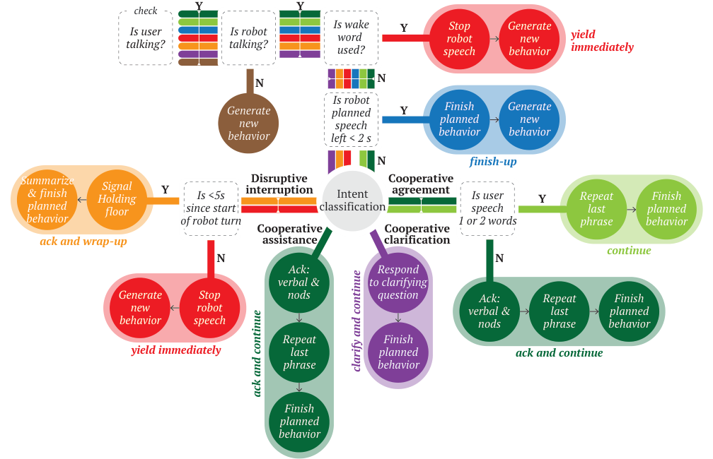
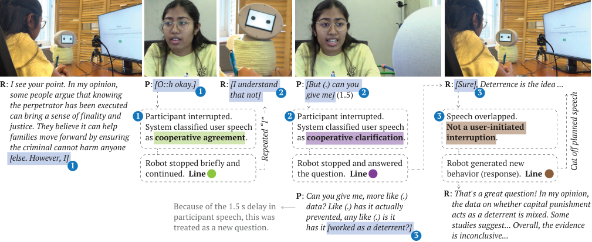

Studio / Interruption Handling for Robots
Interruption Handling for Robots
Interruption Handling for Conversational Robots
Shiye Cao, Jiwon Moon, Amama Mahmood, Victor Nikhil Antony, Ziang Xiao, Anqi Liu, and Chien-Ming Huang

Interruptions, a fundamental component of human communication, can enhance the dynamics and effectiveness of conversations, but only when effectively managed by all parties involved. Despite advancements in robotic systems, state-of-the-art systems still have limited capabilities in handling user-initiated interruptions in real-time.
We present a system that detects user-initiated interruptions and manages them in real-time based on the interrupter’s intent. The system was designed based on interaction patterns identified from human-human interaction data. We integrated our system into an LLM-powered social robot and validated its effectiveness through a timed decision-making task and a contentious discussion task with 21 participants.
Interruptions in conversation
Interruptions, occurring when a listener attempts to take the floor before the speaker’s utterance is complete, are a fundamental aspect of human communication. They lead to more fluid and fast-paced conversations when effectively used and handled. However, interruptions can disrupt the flow of the conversation, potentially leading to conversation breakdowns and the interrupter feeling excluded if addressed inadequately.
Existing spoken dialogue systems mostly rely on explicit turn-taking signaling, such as push-to-talk and wakewords, to detect user-initiated interruptions, and are designed to always yield the speaker turn immediately after an interruption is detected. Little work has explored how conversational robots should manage different types of interruptions. When should robots yield to users? When should robots hold their turn?
Agreement
Aids the completion of the current turn by expressing concurrence or understanding.
Assistance
Provides a word or idea that the speaker may need.
Clarification
Asks the speaker to clarify or elaborate on previous information.
Disruptive interruption
The listener challenges the speaker’s control and disrupts the conversational flow to express an opposing opinion, further develop the current topic, change the subject, or summarize the speaker’s point to end the turn.

Interruption handling in human interaction
There is limited prior research on interruption handling in both human-robot and human-human interaction. To identify human behavior patterns when handling interruptions, we analyzed YouTube videos of three kinds of conversation with varying power dynamics: discussions (106 interruptions), talk show interviews (122), and press briefings (18). We coded each interruption for the intention of the interrupter and the strategy the speaker used to manage it: yield or hold the floor.
Speakers held the floor in three ways: ignoring the interruption and continuing; acknowledging it while repeating a few words spoken at the time of interruption; or explicitly stating intent to continue (e.g., “Let me finish my thought”). The third strategy was used to defend the turn from more aggressive disruptive interruptions.
Cooperative agreement
Speakers typically acknowledged the interruption and continued speaking. A deviation from this pattern was noted in only one case.
Cooperative assistance
The speaker typically acknowledged it, briefly paused for the interrupter to finish (usually a few words), then resumed speaking.
Cooperative clarification
The speaker typically acknowledged the question, paused for the interrupter to finish, answered, and then resumed their original thought. In contentious discussions, the speaker sometimes yielded the floor.
Disruptive interruption
The most common type (130 of 246). In debates, speakers often yielded due to the polarized nature of the discussions; in less polarized settings such as talk shows, they typically held the floor.
Interruption handling system
Our interruption handling system has three main modules: interruption detection, intent classification, and interruption handling. The figure below shows how user input flows through it.

Interruption detection
We detect interruptions by monitoring for simultaneous speech. If the robot has less than two seconds of planned speech left, the system ignores the overlap and finishes up. When the wakeword (the robot’s name) or “stop” is heard, it always yields immediately.
Intent classification
A prompt-engineered large language model (GPT-4o-mini) classifies the intention of the interrupter given the conversational history and the amount of time elapsed in the turn since the robot started talking.
Interruption handling
Following the interaction patterns identified in human conversations, the system adopts a different handling strategy based on the predicted intention of the interrupter.
Handling strategies
| Interruption | Strategy | Robot behavior |
|---|---|---|
| Cooperative agreement, one or two words | Continue | Likely a verbal backchannel. The system disregards it and continues with the remaining planned content from the last punctuation mark. |
| Cooperative agreement, more than two words | Ack and continue | Acknowledges verbally (“ya”, “yes”, “uhhum”, or “sure”), nods, and continues with the remaining planned content. |
| Cooperative assistance | Ack and continue | Acknowledges verbally (“yeah”, “yes”, or “thanks”), nods, and continues from the last punctuation mark. |
| Cooperative clarification | Clarify and continue | An LLM addresses the clarification requested, then continues with the remaining previously planned content. |
| Disruptive, within 5 seconds of the robot starting to speak | Ack and wrap-up | An LLM generates behavior to express intent to maintain the turn (e.g., “Let me finish my thought”), provides a summary of the remaining content, and then yields. |
| Disruptive, milder | Yield immediately | Yields the floor immediately; a new robot response is generated based on the content of the interruption. |
Study design
We integrated the interruption handling system into an LLM-powered social robot and conducted a user study with 21 participants (11 female, 10 male) aged 18 to 30. Participants completed two tasks in random order, each followed by a questionnaire on perceived inclusion in the discussion and overall satisfaction with the discussion, and the study concluded with a semi-structured interview. To encourage user-initiated interruptions, we made the following design choices.
Tasks
In the timed decision-making task, participants had five minutes to select seven out of fifteen items to help them survive in a desert survival simulation. In the discussion task, they prepared a 2-minute presentation on whether the federal government should abolish capital punishment.
Robot persona
The robot had a feminine name (“Luna”), a feminine voice, gaze aversion while talking, and generally positive facial expressions. Prior research highlights that gender significantly affects interruption patterns.
Pre-programmed events
Two events per task where the robot holds the floor for roughly one minute to provoke user-initiated interruptions: an introduction with disclaimers, and an unrelated fun story or facts.
Findings
We identified 121 user-initiated interruptions from 206.59 minutes of interaction data. The timed decision-making task (n = 86) had more than twice as many user-initiated interruptions as the contentious discussion task (n = 35). Of the 111 interruptions handled by the system, 104 were successfully handled, meaning that the robot effectively responded to the interrupter without causing a conversation breakdown.
Interruption types
The most common type of interruption was disruptive (n = 92, 76.03%), followed by cooperative agreement (n = 18), cooperative clarification (n = 9), and rarely, cooperative assistance (n = 2).
Intent classification
Of the 55 interruption attempts that passed through the intent classification module, it correctly classified 44 (80.00%). Including interruptions with wakewords detected, 88.78% were correctly classified.
Causes of failure
Speech recognition errors caused the majority of interruption handling failures. Two correctly classified interruptions failed due to errors in determining where the robot left off at the time of interruption.
Inclusion and satisfaction
The number of unsuccessfully handled interruptions was negatively correlated with users’ perceived inclusion in the discussion (ρ(42) = −.43, p = .005) and their satisfaction with the discussion (ρ(42) = −.35, p = .021).

Design implications
Systems that ignore interruptions are prone to conversational breakdowns as they disregard the user’s intention to shift the conversation. Systems that always yield break the interaction flow when they yield to non-disruptive overlapping speech, such as cooperative agreement and backchannels, which can result in user frustration over time.
Robot’s role, task context, and interruption handling
While floor holding is a common strategy in human conversations, robots holding the floor during disruptive interruptions were not perceived favorably by all participants. Participants who perceived the robot’s role as assistive expected it to yield immediately at every turn. Interruption handling design may also help reinforce a robot’s intended role in a given context.
Breaking habits: from scripted to natural HRI
Some participants preferred the predictability of a “designated stop mechanism” (wakewords), while some felt uncomfortable using the robot’s name or “stop” to interrupt, as it can be viewed as rude in human-human conversations. The habits users have developed with commercial voice assistants constrain their interactions with systems capable of more natural, conversational exchanges.
“I felt like I am trying to solve the issue, and I am just using you [the robot] as a tool to help me”
Participant, on the robot’s role in the task
“the moment I speak, it wants to just like immediate listen, and like my speech should take precedence over anything it says”
The same participant, on their ideal interaction